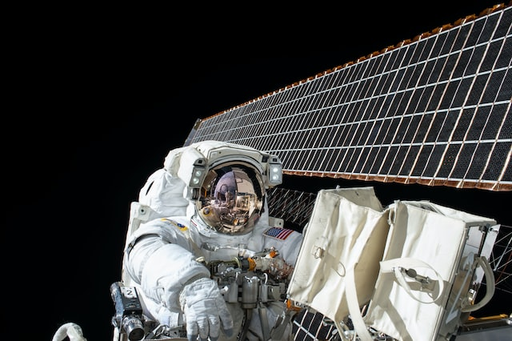
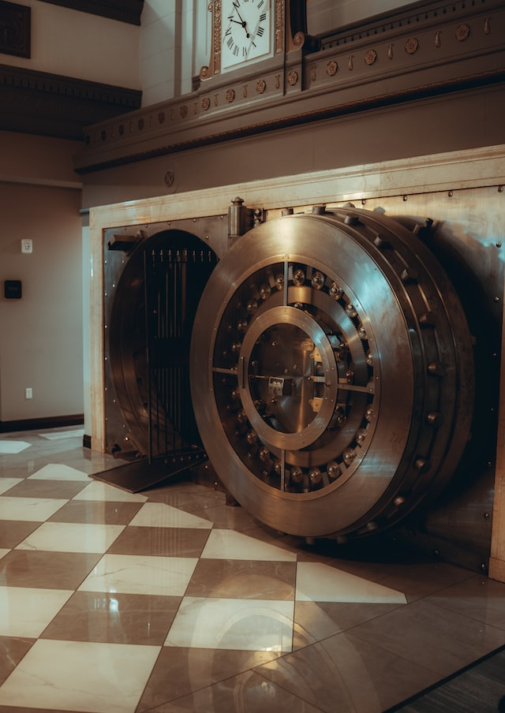

My life summed up:
Hi this is me! I have spent most of my life in America living in multiple states across the U.S. I was born in Switzerland and have spent some years living in Europe as well. I spend my time these days in Texas with my wife and two huskies.

I have always loved space and tech... more space than anything. My dream was always to become an astronaught and spend my days in space. However, since it is very difficult to become an astronaught I decided to spend my time learning about everything in tech and slowly push towards the goal of working as NASA.
Working in banking has taught me many things, and it has opened a lot of doors for me. When I started working as a Business Analyst I knew my next step would have to be in software development. Even though banking has been good to me I had to make a change to start working my way towards my dream job and thats when I found Coding Temple and made the first step in the right direction!
In my free time I enjoy going on hikes or exploring the world around me by either trying a new resturant or activity or just exploring cities, and the nature close to me even though sometimes it ends up being far from me.